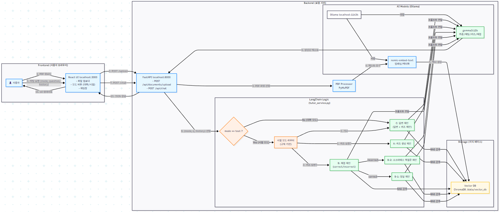

저는 일상 속 다양한 문제를 관찰하는 것에 흥미를 느끼는 개발자입니다. ChatGPT를 접하며 AI가 사람의 빈 부분을 메울 수 있다고 생각하게 되었고, 대화형 인공지능과 페르소나 챗봇에 많은 관심을 가져왔습니다.
이번 AI 튜터 프로젝트는 혼자 공부하는 사람들이 겪는 외로움이나 정보 접근의 한계를 해소하고, 여러 명이 함께 공부할 때의 시너지를 제공하기 위해 기획되었습니다. 이 프로젝트로 혼자 하는 공부와 모두와 하는 공부 간의 격차를 줄이고자 합니다.
학생들이 학습할 때, 때로는 혼자 하는 것보다 여럿이 모여 서로 질문하고 문제를 내주는 것이 더 효과적입니다. 하지만 성격적 이유나 환경적 요인으로 인해 그룹 스터디가 불편하거나 불가능한 사람들도 많습니다.
기존 PDF 기반 챗봇은 단순히 정보를 찾아주는 것에 그쳐, 사용자의 능동적인 학습과 암기를 돕는 데에는 한계가 있었습니다.
핵심 전략으로 RAG(Retrieval-Augmented Generation) 아키텍처를 채택했습니다. 비용 효율성과 경량화를 위해 Ollama를 사용하여 gemma3:4b (채팅/추론)와 nomic-embed-text (임베딩)의 '듀얼 모델' 구조를 설계했습니다.
초기에는 규칙 기반 처리를 고려했으나, 사용자의 다양한 발화 패턴과 맥락을 유연하게 처리하기 위해 'AI 의도 파악(Intent Recognition)' 방식으로 고도화했습니다. AI가 사용자의 입력이 단순 대화인지, 학습 관련 질문인지, 특정 기능 요청인지를 파악하여 적절한 처리 흐름으로 연결합니다.
또한, 단순한 문답을 넘어 '모의 시험'과 '암기 카드' 기능을 별도의 모듈로 구현하여, PDF 내용을 바탕으로 능동적인 학습 경험을 제공하도록 설계했습니다.

기존의 딱딱한 규칙 기반 처리에서 벗어나, AI가 사용자의 대화 맥락과 의도를 파악합니다. 단순한 질문 답변뿐만 아니라, 사용자의 학습 수준에 맞춘 설명과 가이드를 제공합니다.
대화형 퀴즈의 한계를 넘어, 실제 시험 환경을 제공합니다. 사용자가 문제 수를 설정하면 AI가 PDF 내용을 바탕으로 문제를 사전에 생성합니다. 사용자가 답을 제출하면 AI의 정답과 비교하여 채점하고 피드백을 제공합니다.
PDF 파일의 방대한 내용을 AI가 핵심 요약하여 암기 카드로 변환해줍니다. 중요한 개념과 정의를 빠르게 복습할 수 있어 효율적인 학습을 돕습니다.